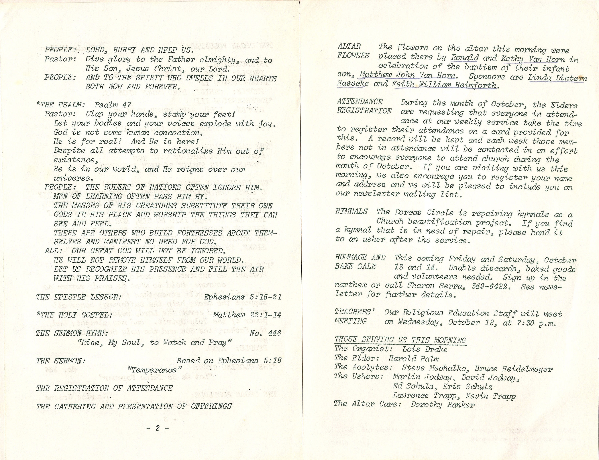
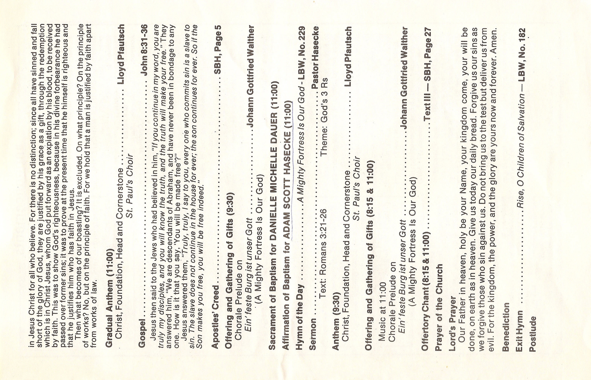
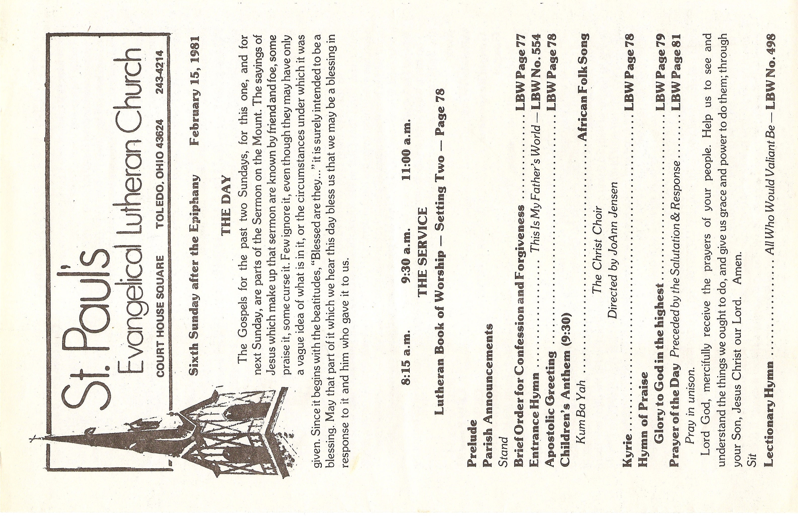
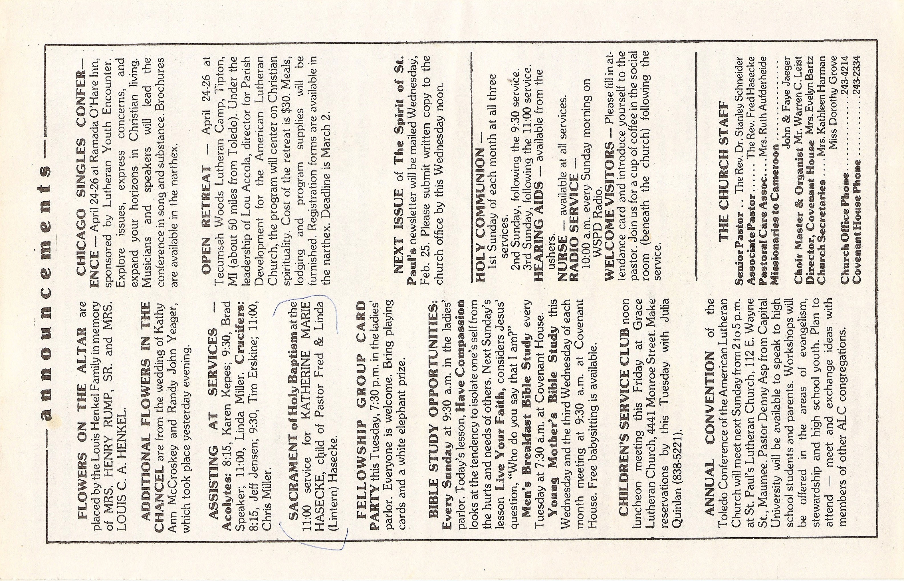
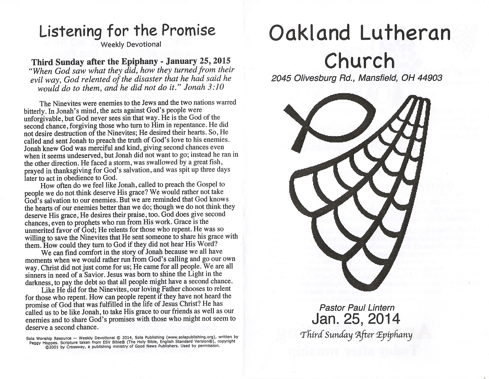

The Meyer Baptismal Gown History Book

June 1985, 73 years old.
The Dress

May 1985, 73 years old.
The Dress was made for Robert Henry Meyer by Eda Helms, wife of August Helms, in March of 1912. August Helms as the brohter of Robert's mother, Martha Helms Meyer.
XX
First Generation
The dress was first worn by Robert Henry Meyer at his baptism in April 1912. He was the son of Theodore Wilhelm adn Martha Marie Helms Meyer. Trinity Lutheran Church - Cleveland, Ohio.
The Second to wear teh dress was his sister, Ruth Ester Meyer, at her baptism, July 1920. Trinity Lutheran Church - Cleveland, Ohio.
The third to wear it was his second sister, Lenore Kathryn Meyer, at her baptism, August 1922. Trinity Lutheran Church - Cleveland, Ohio.
XX
#1 Robert Henry Meyer
April, 1912
#2 Ruth Ester Meyers
July, 1920
#3 Lenore Kathryn Meyer
July, 1920
Ruth, Bob, Lenore (July 18th, 1995)
Ruth's 75th Birthday
Trinity Lutheran Church - Cheveland, OH
XX
Second Generation
#4 Cathy Lee Heimforth
April, 1947
#5 Linda Ruth Lintern
June, 1948
#6 Carol Adele Lintern
May, 1950
#7 Keith William Heimforth
May, 1953
#8 Paul Lawrence Lintern
July, 1956
XX
#4 Cathy Lee Heimforth
May, 1947
Cathy Lee Heimforth, child of John and Lenore (nee Meyer) was baptized in may 1947 at Redeemer Lutheran Church - Detroit, Michigan.
Detroit MI, at Grandma and Grandpa Meyer's.
XX
#5 Linda Ruth Lintern
June, 1948
Linda Ruth Lintern, dauther of Lawrence and Ruth (nee Meyer) Lintern, was baptized in June 1948 at Redeemer Lutheran Church - Detroit, Michigan.

Linda Ruth Lintern

Cathy Heimforth and Linda Lintern
XX
#6 Carol Adele Lintern
May, 1950
Carol Adele Lintern, dauther of Lawrence and Ruth (nee Meyer) Lintern, was baptized in May 1950 at Gloria Dei Lutheran Church - Detroit, Michigan.

Carol Adele Lintern

Linda, Ruth, Lawrence, Carol
XX
#7 Keith William Heimforth
May, 1953
Keith William Heimforth son of John and Lenore (nee Meyer) Heimforth was baptized in May 1953 at Faith - Outer Drive Lutheran Church - Detroit, Michigan

Keith William Heimforth

Lenore and Keith
John, Cathey, Lenore, Keith
XX
#8 Paul Lawrence Lintern
July, 1956
Paul Lawrence Lintern, son of Lawrence and Ruth (nee Meyer) Lintern, was baptized in July 1956 at Gloria Dei Lutheran Church - Detroit, Michigan.

Paul Lawrence Lintern

Paul, Ruth, Linda, Carol, Lawrence
XX
Third Generation
#9 Matthew John Van Horn
October 14th, 1972
#10 Edward Brooke Hasecke
December 24th, 1974
#11 Brian Russell Van Horn
October 12th, 1975
#12 Amanda Katherine Van Horn February 20th, 1977
#13 Adam Scott Hasecke
October 29th, 1978
#14 Katherine Marie Hasecke
February 15th, 1981
#15 Mark Lawrence Lintern
July 28th, 1985
#16 Steve Lawrence Lintern
November 22nd, 1987
XX
#9 Matthew John Van Horn
October 14th, 1972
Matthew John Van Horn, son of Ronald and Cathy (nee Heimforth) Van Horn was baptized on October 14th, 1972 at Holy Trinity Lutheran Church - Livonia, Michigan.

Matthew John Van Horn
XX
#9 Matthew John Van Horn
October 14th, 1972
XX
#9 Matthew John Van Horn

XX
#10 Edward Brooke Hasecke
December 24th, 1974
Edward Brooke Hasecke, son of Frederick and Linda (nee Lintern) Hasecke, was baptized on December 24, 1974 at Trinity Lutheran Church - Pittsburgh, Pennsylvania.

Trinithy Lutheran Church

Fred, Linda, Edward

Edward Brooke Hasecke
XX
#10 Edward Brooke Haseske
XX
#11 Brian Russell Van Horn
October 12th, 1975
Brian Russell Van Horn, son of Rhonald and Cathy (nee Heimforth) Van Horn, was baptized on October 12th, 1975 at Holy Trinity Lutheran Church - Livonia, Michigan.
XX
#11 Brian Russell Van Horn
XX
#12 Amanda Katherine Van Horn
February 20th, 1977
Amanda Katherine Van Horn, daughter of Ronald and Cathy (nee Heimforth) Van Horn, was baptized on February 20th, 1977 at Holy Trinity Lutheran Church - Livonia, Michigan.

Amanda Katherine Van Horn

Paul and Carol Lintern

Sponsors, Paul and Carol Lintern
Ronald and Emily Braun
XX
#12 Amanda Katherine Van Horn
XX
#13 Adam Scott Hasecke
October 28th, 1978
Adam Scott Hasecke, son of Frederick and Linda (nee Lintern) Hasecke, has his baptism affirmed on October 29th, 1978 at St. Paul's Lutheran Church - Toledo, Ohio.

God Parents Cathy (Heimforth) Van Horn and Paul Lintern
St. Paul's Lutheran Church
XX
#13 Adam Scott Hasecke

XX
#14 Katherine Marie Hasecke
February 15th, 1981
Katherine Marie Hasecke, daughter of Frederick and Linda (nee Lintern) Hasecke, has his baptism affirmed on Febrary 15th, 1981 at St. Paul's Lutheran Church - Toledo, Ohio.

Katherine Marie Hasecke
Katherine, Ruth Lintern, Cathy Van Horn, Adam Hasecke, Linda Hasecke, Matthew, Brian, and Amanda Van Horn, Carol Lintern, Edward Hasecke.

God Parents - Richard and Rosemarie Stapf (Fred's cousins)
XX
#14 Katherine Marie Hasecke


XX
#15 Mark Lawrence Lintern
July 28th, 1985
Mark Lawrence Lintern, son of Paul and Peggy (nee Jolliff) Lintern was baptized on July 28th, 1985 at Zion Lutheran Church - Doylestown, Ohio.

Mark Lawrence Lintern

Zion Lutheran Church - Doylestown, Ohio
Katherine, Great Grandma Jolliff, Grandma Jolliff and Grandma Lintern.
Ruth Lintern, Paul Lintern, Carol Lintern, Linda Hasecke, Edward, Adam, and Katherine Hasecke.
XX
#15 Mark Lawrence Lintern
XX
#16 Steven Lawrence Lintern
November 22th, 1987
Steven Lawrence Lintern, son of Paul and Peggy (nee Jolliff) Lintern was baptized on November 22th, 1987 at Zion Lutheran Church - Doylestown, Ohio.

Mark and Steve Lintern
Mark, Peggy, Paul, Steve Lintern

Ruth Lintern, Steve Lintern, Paul Lintern, Mark Lintern, Edward Hasecke, Carol Lintern, Katherine Hasecke, Linda Hasecke, Adam Hasecke
Same as about plus Peggy Lintern and .
XX
#16 Steven Lawrence Lintern
XX
Fourth Generation
#17 Emily Brooke Hasecke
February 18th, 2001
#18 Joshua Matthew Van Horn March 25th 2001
#19 Makenna Kay Van Horn
May 18th 2003
#20 Benjamin Adam Hasecke June 22nd, 2003
#22 William Evan Hasecke
August 19th 2007
#25 Mackenzie Ruth Lintern
January, 2015
XX
#17 Emily Brooke Hasecke
February 18, 2001
Emily Brooke Hasecke, daughter of Edward and Catherine (nee Speers) hasecke, was baptized on Feruary 18, 2001 at Worthington Presbyterian Church - Worthington, Ohio.

Emily Brooke Hasecke
XX
#17 Emily Brooke Hasecke
Edward Hasecke, Linda Hasecke, Steven Lintern, Mark Lintern, Paul Lintern, Carol Bieri, Katherine Hasecke, Ruth Lintern
Emily and Great Grandma Ruth
Edward, Cathy and Brooke Haseske
XX
#17 Emily Brooke Hasecke
XX
#18 Joshua Matthew Van Horn
March 25th, 2001
Joshua Matthew Van Horn, son of Matthew John Van Horn and Jennifer (nee Bargowski) Van horn was baptized on March 25th, 2001 at St. John Neumann Parish - Canton, Michigan.

Joshua Matthew Van Horn

Baptized by Father George, St. John Neumann Parish.
Joshua's Godpartent's Amanda Van Horn & Graig Bargowski
XX
#18 Joshua Matthew Van Horn

Parents, Matt & Jennifer Van Horn
Brian, Matthew, Joshua, Cathy, and Amanda Van Horn
XX
#18 Joshua Matthew Van Horn
XX
#19 Makenna Kay Van Horn
May 18th, 2003
Makenna Kay Van Horn, daughter of Matthew John Van Horn and Jennifer (nee Bargowski) Van horn was baptized on May 18th, 2003 at St. John Neumann Parish - Canton, Michigan.

Makenna Kay Van Horn
Brother Josh, Matt, Jennifer, and Makenna
Lenore Heimforth, Cathy Keller, Makenna, Matthew, Joshua, and Amanda Van Horn.
XX
#19 Makenna Kay Van Horn

St. John Neumann
Godparents, Chris and Carrie Bargowski.
XX
#20 Benjamin Adam Hasecke
June 22nd, 2003
Benjamin Adam Hasecke, son of Edward and Catherine (nee Speers) hasecke, was baptized on June 22nd, 2003 at Westlake United Mehodist Church - Westlake, Ohio.

Benjamin Adam Hasecke
XX
#20 Benjamin Adam Hasecke
Carol Bieri, Linda Hasecke, Benjamin, Katherine Hasecke, Emily Hasecke, Edward Hasecke, Ruth Lintern, Robert Meyer.

Emily, Edward, Cathy, and Ben Hasecke.
XX
#20 Benjamin Adam Hasecke
XX
#22 William Evan Hasecke
August 19th, 2007
William Evan Hasecke, son of Edward and Catherine (nee Speers) hasecke, was baptized on August 19th, 2007 at Christ Episcopal Church - Springfield, Ohio.

William Evan Hasecke

William Evan Hasecke

William Evan Hasecke
XX
#22 William Evan Hasecke
Katie, Linda, Cathy, Will, Emily, Ben, Ed, Fred Hasecke

Katie Hasecke, Benjamin Hasecke, Linda Hasecke, Emily Hasecke, William Hasecke, Edward Hasecke, Mark Lintern

William Evan Hasecke
XX
#22 William Evan Hasecke
XX
#25 Mackenzie Ruth Lintern
January 25th, 2015

Mackenzie Ruth Lintern

Oakland Lutheran Church, Mansfield, OH

Amy Lintern, Mackenzie Lintern, Mark Lintern

Left to Right: Ed Hasecke, Mark Lintern, Mackenzie Lintern, Will Hasecke, Paul Lintern, Ben Hasecke, Linda Hasecke
XX
#25 Mackenzie Ruth Lintern

XX
#2X Template
January 25th, 2015

Caption

Caption

Caption

Caption
XX